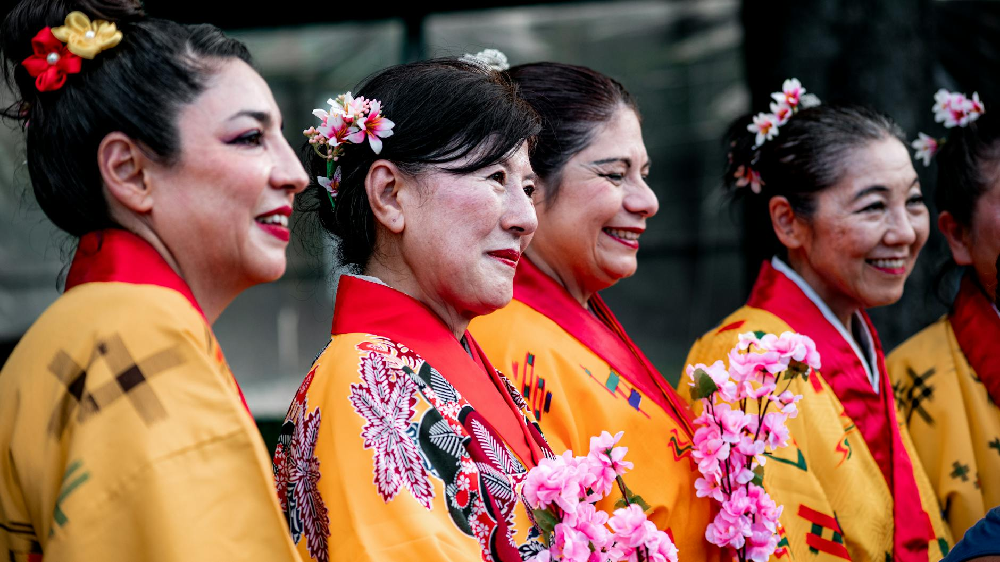
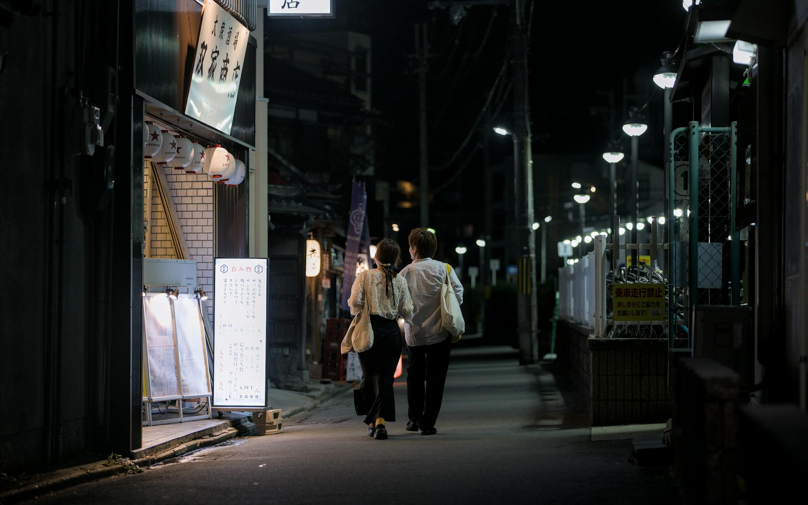
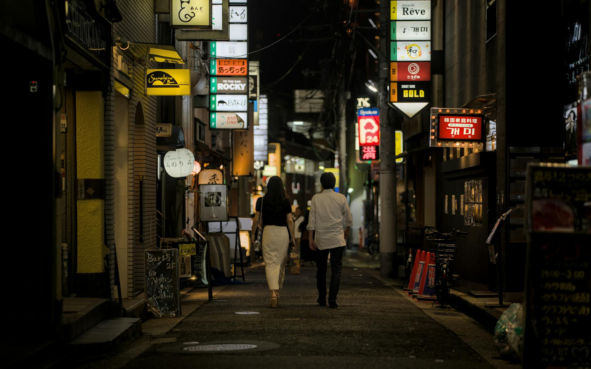

Latest Guides
In-depth articles written for foreign men dating in Japan

How Japanese Women Approach Dating Differently
Understanding how Japanese women think about dating can save you from misreading signals and help you build a genuine connection. Here's what actually differs.
Read Article →How to Show Romantic Interest Without Pressuring a Japanese Woman
Showing interest in Japan is about patience and subtlety. Discover how to let someone know you care without overwhelming her.
Read Article →Dating App Scams in Japan: What Foreign Men Need to Know
Dating apps in Japan can be great for meeting people — but scammers know foreigners are a prime target. Here's how to protect yourself.
Read Article →How to Meet Japanese Women at Language Exchange Events
Language exchange events offer a natural, low-pressure setting to meet Japanese women who are genuinely interested in connecting with foreigners. Here's how to make the most of them.
Read Article →Public Displays of Affection in Japan: What Is and Is Not Acceptable
Japan has its own unwritten rules about public affection. Understanding what is and is not acceptable can save you from awkward moments and show your partner real respect.
Read Article →Best Dating Apps for Foreigners in Japan: Pairs, Bumble & Tinder Compared
Not all dating apps work equally well for foreigners in Japan. This guide breaks down the top three platforms — Pairs, Bumble, and Tinder — so you can choose the one that fits your goals.
Read Article →The Art of Kokuhaku: How to Confess Your Feelings in Japan
In Japan, relationships rarely just 'happen' — they begin with kokuhaku, a direct confession of feelings. Understanding this tradition can make or break your romantic chances.
Read Article →How to Recover After a Bad First Date in Japan
Bad first dates happen to everyone. In Japan, how you respond afterward often matters more than the date itself. Here's how to recover without making things worse.
Read Article →How to Handle Age-Gap Dating in Japan Respectfully
Age-gap relationships exist in Japan, but cultural expectations shape how they play out. Here's how to approach them with respect and honesty.
Read Article →Safe Public Date Spots in Japan: Best Places for First and Second Dates
Choosing the right location for an early date in Japan sets the tone for everything that follows. These public spots are comfortable, conversation-friendly, and culturally appropriate.
Read Article →What to Wear on a First Date in Japan (Men's Guide)
First impressions matter everywhere, but in Japan they carry extra weight. Here is how to dress well without overthinking it.
Read Article →When and How to Talk About Exclusivity in Japan Dating
In Japan, becoming exclusive rarely happens through one direct conversation. Understanding the cultural timing and gentle signals can make all the difference.
Read Article →What Text Frequency Is Normal in Early Japanese Dating?
Early Japanese dating often moves at a slower, more balanced texting pace than many foreigners expect. Here’s how to read her rhythm and respond well.
Read Article →How to Avoid Being Seen as a Player in Japan Dating Culture
Japan's dating culture values sincerity above almost everything else. Here's how to make sure your intentions come across as genuine — not suspicious.
Read Article →Signs She Is Politely Not Interested in Japan
Japanese culture values harmony over direct confrontation. That means a clear 'no' often sounds like 'maybe' or silence. Here is how to read the real message.
Read Article →Best Low-Pressure First Date Ideas in Tokyo
First dates in Tokyo don't have to be stressful. These low-key ideas help you both feel comfortable, keep conversation flowing, and make a genuine connection.
Read Article →
How to Prepare for Meeting Your Japanese Girlfriend's Parents
Meeting her parents is a big step. Prepare with respectful greetings, a thoughtful gift, and calm conversation to make a strong first impression.
Read Article →
Building a Long-Term Relationship in Japan as a Foreign Man
A long-term relationship in Japan works best when you build trust slowly, communicate clearly, and respect each other’s pace and life goals.
Read Article →Gift-Giving Rules in Japanese Dating: What to Offer and What to Avoid
Gift-giving in Japanese dating is thoughtful but usually modest. Learn when to give, what feels appropriate, and what can come across as too much.
Read Article →Common Mistakes Foreign Men Make When Dating in Japan
Avoid the most common pitfalls foreign men face when dating in Japan—communication cues, pace, manners, planning, and more.
Read Article →How to Build a Great Dating App Profile in Japan (for Foreign Men)
Create a profile that feels warm, trustworthy, and culturally aware—without gimmicks. Photos, bio, details, and safety tips tailored for Japan.
Read Article →Red Flags to Watch for When Dating in Japan
Learn the difference between cultural quirks and genuine red flags in Japan—plus clear steps to stay safe, set boundaries, and date respectfully.
Read Article →How to Read Second-Date Interest Signals from Japanese Women
A second date usually comes down to comfort, consistency, and follow-through. Here’s how to read the signs without making assumptions.
Read Article →Who Pays on a Date in Japan? How to Handle the Bill Politely
Paying the bill on a date in Japan comes with its own set of unspoken rules. Here's what you need to know to handle it smoothly.
Read Article →LINE Messaging Rules That Work in Japanese Dating Culture
LINE is the heartbeat of Japanese dating communication. Knowing when to reply, what to send, and how to read silence can make or break a budding connection.
Read Article →How to Ask a Japanese Woman Out Without Sounding Pushy
Asking someone out in Japan is a subtle art. Here's how to invite a Japanese woman on a date in a way that feels natural, respectful, and genuinely appealing.
Read Article →
Japanese Dating Etiquette for Foreigners: What You Must Know
Master the unspoken rules of dating in Japan — from punctuality and gift-giving to paying the bill and understanding indirect communication.
Read Article →
Understanding Japanese Dating Culture: A Complete Guide for Foreign Men
Everything you need to know about how Japanese women approach dating, relationships, and what makes Japan's dating culture unique.
Read Article →
Where to Meet Japanese Women as a Foreigner: Apps, Places & Events
The most realistic options for foreign men in Japan — from dating apps and language exchange to hobby classes, bars, and everyday life situations.
Read Article →
Understanding Japanese Women's Communication Style: Reading Between the Lines
How to read indirect signals, what "yes" really means, LINE texting patterns, the role of silence, and how to express your own interest clearly.
Read Article →